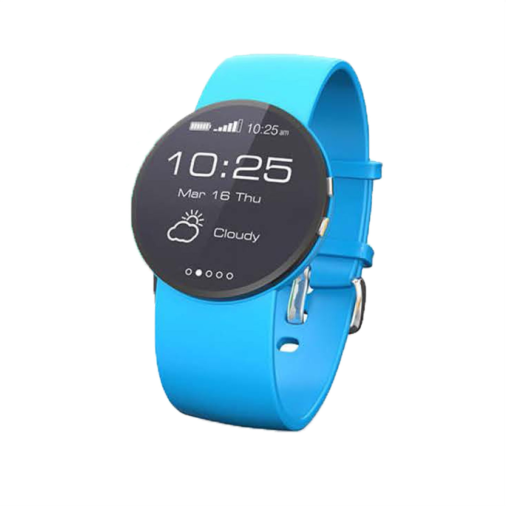

CAT WATCH
SPORTIA α [SW S-01]
スポーツモデル
¥15,000-（税別）
バンドのカラー
高機能スポーツウォッチ。防水加工に加え、10mからの落衝撃に耐える強度を備えました。スポーツやアウトドアに最適なスマートウォチです。
- 1.4インチ フル円型 プラスティック有機ELディスプレイ採用
- 18時間連続使用できる高持続バッテリー内蔵
- 通話もできるワイヤレスマイクイヤホン付属
スペック
| CPU | 1.2GHz |
|---|---|
| サイズ（高さ×幅×厚さ） | 46.4×53.6×9.7mm |
| ケース重量 | 38.5g |
| バッテリー持続時間 | 最大18時間（通常使用時） |
| 防水性能 | 5ATM（50メートル防水） |
カートに追加する